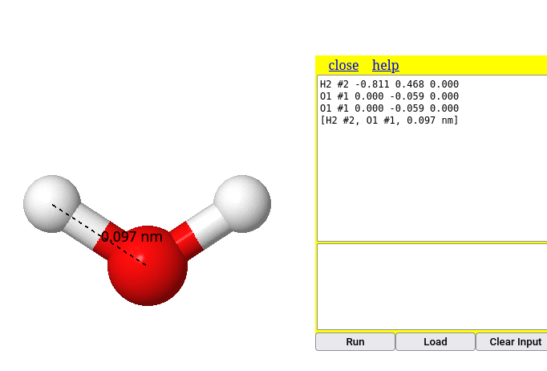
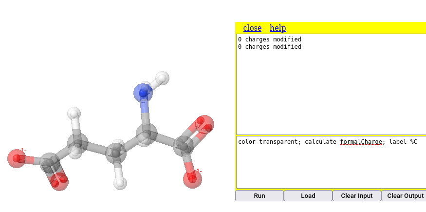
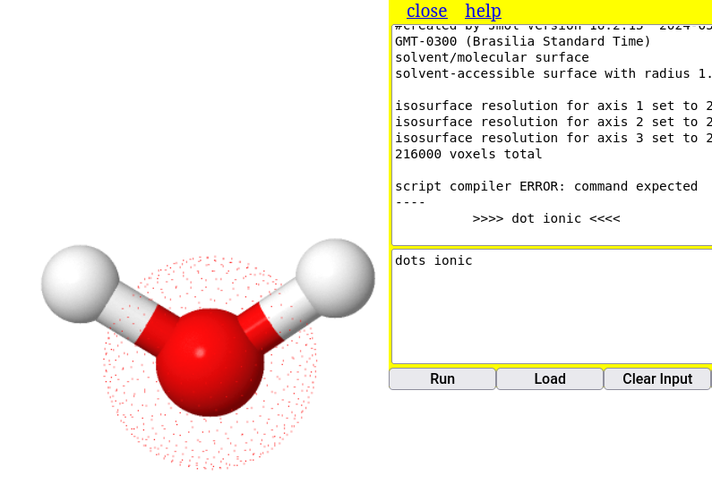

1. Double-click on the first atom;
2. Drag the mouse to the second atom;
3. Click on the second atom5 - Molecule workshop
1 Measurements
Jmol allows you to calculate distances and angles in a molecular model. To illustrate this, it may be interesting to load a water model (
load $water), whose distances and angles are found in some chemistry textbooks.1.1 For distances
In the example of the water molecule, to determine the distance of an O-H bond, for example, execute:
Trying this for the distance of the O-H bond, the program returns the value 0.097 nm, or 0.97 Angstroms, the conventional value for this type of covalent bond.

1.2 For angles
For the same water molecule, try to determine the bond angle:
1. Double-click on the first atom (e.g., H);
2. Drag to the second atom (e.g., O);
3. Click on the second atom;
4. Drag to the third atom (e.g., the other H);
5. Click on the third atomNote that the system returns a value of 114°, which is close to the expected value for the molecule (109.5°) or the measured value (104.5°). This approximation is due to the construction of the water model.

To clear the measurements, use the command:
measure off2 Molecular characteristics
There is a lot of tangible information about a molecular model in Jmol. Here are some examples of the most basic information for the molecule of a component of shoyo sauce, glutamate:
2.1 Charges
Sometimes it can be interesting to show the polarity of molecules based on their charge distribution. In Jmol there are two types of charges, effective charge (
formaCharge) and partial charge (partialcharge). We can illustrate the charge distribution in a surfactant molecule, such as hexadecanoate.
To do this, type the following commands in the Console:
load $hexadecanoate
calculate partialCharge # calculation of partial charges of the model
label %P # presentation of charges (labeling)A feature of Jmol that makes it more efficient to execute actions is the sequential arrangement of commands. This way, it is not necessary to click Enter for each command, just separate the commands with semicolons (;) as illustrated below, to calculate the partial charges of the glutamate molecule:

Similarly, the obtaining of formal charges in the model can be illustrated. In this case, transparent coloring was added for better visualization of the negative unit charge of the carboxylic acid:
calculate formalcharges # calculation of partial charges of the model
label %C # presentation of charges (labeling)
Note that the commands in the figure mix upper and lower case letters, unlike the command line that precedes them. This is a cool feature of Jmol, which does not care about font capitalization. In other words, it does not matter if you use lower case, upper case, or a combination of both; Jmol performs the action in the same way.
2.1.1 Scripts & Reproducible Teaching
The example above shows a simple way to concatenate commands, facilitating the automatic and sequential execution of a set of them. However, the command line view is somewhat impaired by the separation with “;”, which can cause visual pollution when there are several commands.
The workaround involves arranging the commands in a script format. This is nothing more than a piece of code containing one command per line, which improves the visualization of the code as a whole. In addition, the script has the added advantage of allowing comments to be inserted between command lines, also allowing for better appropriation of the code and its learning.
These characteristics of a command line with explanatory comments give Jmol its aspect for programming sequential actions, and consequently establish one of the basic premises for Reproducible Teaching: the writing of code snippets in single-line commands, written as in a notepad, with comments on the program’s actions on each line.
As an example for a script involving the actions for glutamate above, just copy the snippet below and paste it into the JSmol Console, then execute it.
load $glu # loading micromolecule
wireframe only # exclusive rendering of rods
calculate partialCharge # partial charge
label %P Another aspect inherent to the Reproducible Teaching initiative is the possibility of evaluating the code with some changes, aiming at a slightly modified final product. Try repeating the above snippet, but for effective charges, that is:
load $glu # loading micromolecule
cpk only # exclusive rendering by filled space
calculate formalCharge # effective charge
label %C In addition, you can change more commands in the code to create a result that is completely different from the original. This defines another feature of Reproducible Teaching, namely code snippet creation. To illustrate, here is an excerpt based on the previous one, but for energy minimization and restructuring of the molecule’s orbitals.
load $glu # micromolecule loading
cpk only # exclusive rendering by filled space
minimize # command for structure energy minimization 3 Molecular characteristics
Sometimes it is also interesting to introduce the class to the concept of weak forces that permeate molecular interactions, as illustrated below.
{kind=link}
In addition to structural prediction for partial charge and formal charge, Jmol also allows you to highlight weak forces in the model, such as van der Waals clouds and hydrogen bonds, as follows.
3.1 Van der Waals cloud
dots on # van der Waals cloud on the atoms of the model (remove with "dots off")
calculate hbonds # identifies hydrogen bonds in the modelTo illustrate, copy and paste the following snippet into the Console:
load $water
dots on # van der Waals cloud on the water structure
dots ionic # ionic cloud over the model

3.2 Hydrogen bonds
load=1djf # loads a peptide model
calculate hbonds # displays the H bonds present in the structure

4 Surfaces
In addition to the van der Waals surface (dots on) seen above, Jmol is capable of representing some surfaces for molecular models. The larger the molecule, the greater the internal calculation to generate the surface, which can make it difficult to visualize. Thus, illustrating a simple command for the surface of a water molecule:
isosurface molecular # molecular surface that includes the solvent